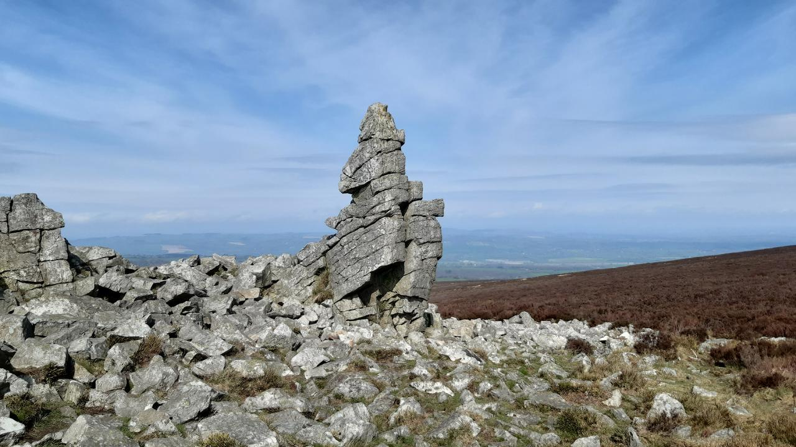
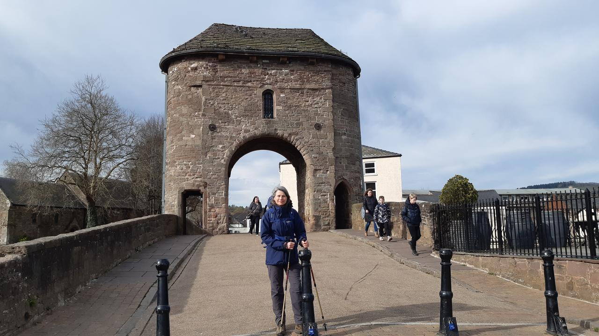
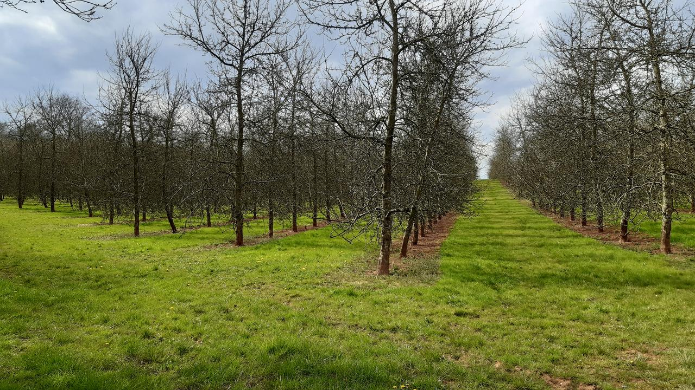
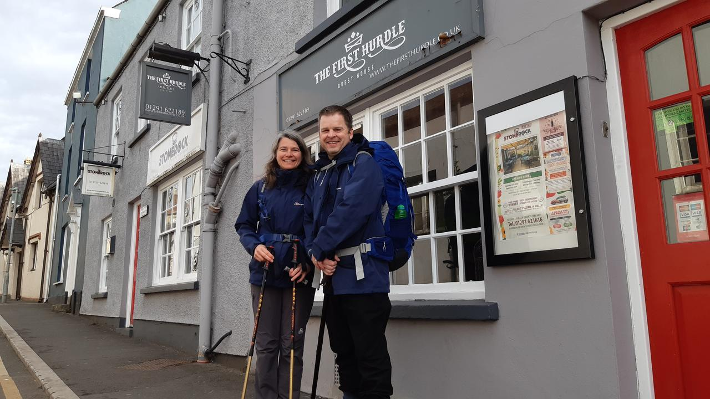
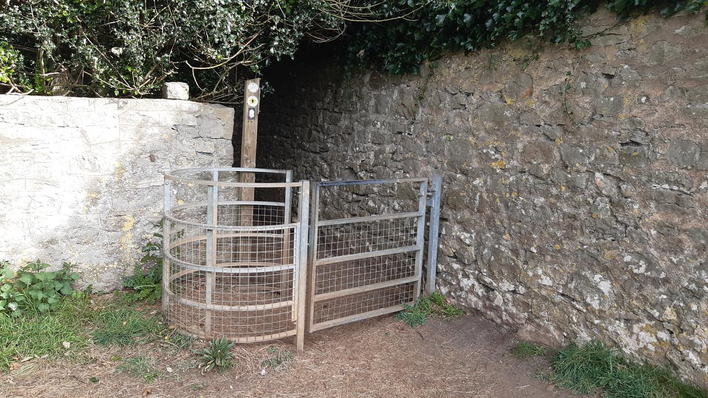
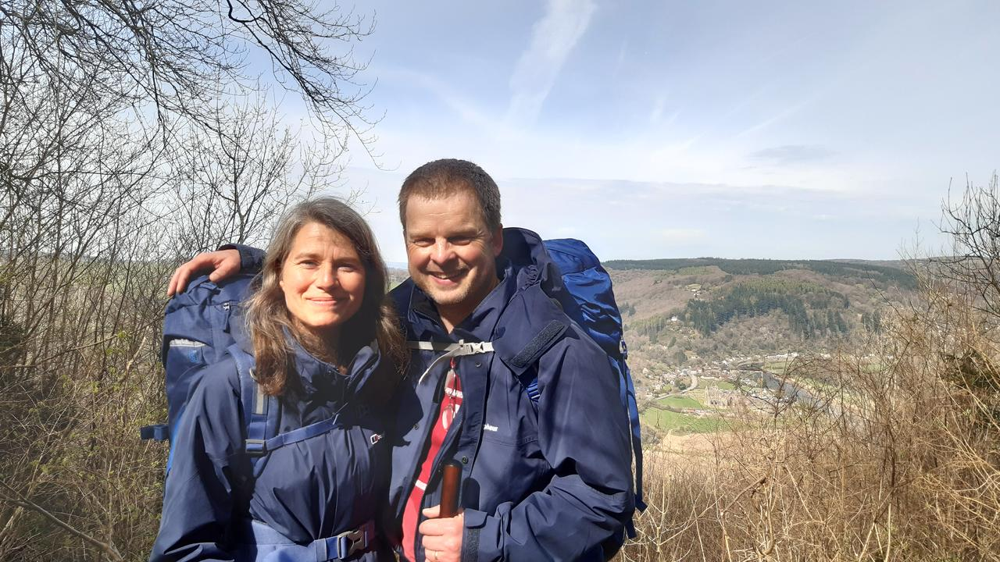

Since we are supposed to be on a walking holiday, Mary and I decided to try
out a shorter walk, and one with which we were familiar, on day 7. We were in
Mary's part of the world (the beautiful Shropshire hills) and so we found
ourselves driving to Stiperstones.
The two of us on the ridge at Stiperstones.
We arrived relatively early in the morning and easily found a parking space,
gingerly put on our boots and started to make our ascent. Given we were both
injured in some sense (me with my blisters and Mary with her knee) we went at a
slow and steady pace.
An outcrop at Stiperstones.
Once at the top of the ridge (one of the highest points in Shropshire), the
outcrops of quartzite rock make obvious waypoints for hiking. We found several
folks bouldering on the rock
formations and paused to watch them and take in the glorious views and drink in
the fresh clear air.
Very poor conditions under foot at Stiperstones.
Conditions underfoot on many parts of the ridge are not good, and it's easy to
go over on one's ankle or painfully stub a toe.
Our slowness was thus more compounded by both the injuries and rough-shod rocks
strewn all over the paths. Yet we made progress and walked the full extent of
the ridge in glorious sunshine and accompanied by larks chirruping
away:
He rises and begins to round,
He drops the silver chain of sound
Of many links without a break,
In chirrup, whistle, slur and shake,
All intervolv’d and spreading wide,
Like water-dimples down a tide
Where ripple ripple overcurls
And eddy into eddy whirls;
In the afternoon we visited the small town of Bishop's Castle,
having heard the high street contained a number of book shops and a
Poetry Pharmacy, which sounded like it was
just what we needed.
The high street at Bishop's Castle - including a poetry pharmacy.
In the end we spent most of our time in the wonderful House on Crutches Museum
where I was able to examine some of the old brass instruments from the former
town band (not in a good state), and learn all about local
Morris dancing troupes.
The poetry pharmacy was another highlight, although I was unable to find
anything to read that suited my mood. Perhaps, given that I usually have my
nose in a book, this holiday is also a holiday from reading.
In the evening we stayed near Welshpool
and found evidence of the local knitting circle's guerilla Easter decoration
operation:
Easter knitting in Welshpool.
The next day started with a drive to lake Vyrnwy (you pronounce it,
"ver-in-wee"). The lake is man-made and to reach the car park involves crossing
this rather imposing dam.
The imposing dam at Lake Vyrnwy.
We timed our arrival perfectly since the car park was empty and hardly anyone
appeared to be around.
We decided to walk around the lake until we found a quiet beach on which we
could sit, relax and simply ponder the world. It can't have taken more than 20
minutes to find such an isolated spot, and we spent over two hours just
chatting, relaxing or throwing skimmers into the lake.
Over the course of the morning we were joined by various passers-by: a young
family, a Polish couple with their daughter, a group of students. Everyone was
friendly and happy to be by the lakeside and the opportunity for moments of
reflection that it offered.
Lake Vyrnwy.
On our walk back to the car we appeared to meet a bank holiday weekend tour for
the "young fellers with souped-up cars" motoring club. The sound of noisy
exhausts, the look of go-faster stripes and the thinness of sports tyres
(clearly, for country roads) were much in evidence. A massive traffic jam was
also in evidence as the posse (what is the correct plural noun?) of young men
in souped up cars, took on the overweight hairy bikers and caravan owners in a
three way battle for the junction leading to the dam. It wasn't a pretty sight
as helpful bikers attempted to direct the traffic, only to be ignored by one of
the other tribes (in the end, the old fellers just stood in the way of the
traffic to control the flow). Well, done to the hairy bikers for their public
service!
We took our time getting back to the car, not wishing to be involved in the
traffic chaos, but in the end the blockages had been cleared and the route to
the dam was clear.
We ended up driving to our overnight rest stop at Llanymynech
and spent some time exploring the remains of the lime industry in the area.
This included a lovely walk in some woods reclaiming the area used for
processing and delivering treated lime into barges on the Shropshire Union
canal. Among the thickets we found a huge abandoned lime kiln.
As members of the National Trust
we got in for free and spent the morning wandering the amazing gardens and
grounds.
Chirk Castle.
The gardens ranged from managed woodland to formal gardens with statues and
topiary.
Chirk gardens.
Inside the castle were displays depicting different aspects of the castle's
history, including the dungeon, the clockwork for the clock tower, the
servant's hall and a collection of knight's helmets. These final items made
me smile, as each helmet appears to bear a different expression, much like a
medieval metal emoji.
A selection of knight's helmets.
In the afternoon we visited the town of Llangollen. It being bank holiday
Monday, the small town was heaving with visitors (like us) and the tourist
traps were doing a swift trade.
A highlight was watching canoeists tackle the Dee river running through the
town (they had hung slalom gates over the river). This led us to the railway
station, run by volunteer enthusiasts, and we ended up escaping the scrum of
tourists by taking a trip up the valley in an open train to the village of
Berwyn.
The river Dee at Llangollen.
As we enter the final stretch of our holiday, we're both starting to feel like
all this relaxing and touring is quite tiring. It means our holiday has done
its job: we're looking forward to throwing ourselves back into our usual day to
day routines.
Yesterday was our first proper "touring" day, and we made the most of our relative
(but not actual) closeness to Machynlleth
to visit
the Centre for Alternative Technology (CAT) - an
inspiring organisation that specialises in sustainable living.
When we first visited CAT back in 1995, it turned out to be a perfect day both
of us fondly remember. We have returned several times since and enjoyed
watching the site, educational work and influence of the CAT organisation
flourish and grow.
As someone fascinated with technology (and I'll informally define that as,
crafting the world through creativity and coherent invention to better engage
and interact with it to some valuable aim or benefit), the "alternative" part
of the CAT name has always appealed to me.
I'm a software engineer, a job most folks imagine is at the heart of "new" or
"hi"-tech. Yet I, and many of my colleagues, will tell you that "new"
and "hi"-tech is not necessarily the same as "good". The focus on "alternative"
appeals to the engineer in me: it means I'm not constrained to frame my
thinking via the tired stereotypes found in our culture.
A good example of what I mean is the first thing you see upon arrival at CAT, a
water powered funicular railway.
Arrival at the Centre for Alternative Technology involves ascending a mountain in a water powered funicular railway.
Clearly there is a lot of technology going on here, but it's not a computing
"tech" mode of transport like a Segway or self-driving car. If you
understand simple physics, it's easy to figure out how it works. That it runs
on water, an abundant resource in rainy Wales, means the energy cost of running
the system is very small and doesn't involve polluting the environment
(rather, it complements and integrates the ambient environmental conditions).
The lake at the top of the railway is the source of the water.
I like this enlarged view of technology, beyond just the thing being imagined
or a "tech" mode of creation.
Sustainability, impact and
the life-cycle of the "tech" is carefully considered. This is a very
different approach to "smaller, faster, cheaper" gizmos and apps inflicted upon
"consumers", created and made with a development process based on the mantra of
"move fast and break things",
whose aim is to maximise shareholder profit. Put simply, there is a
philosophical aspect to tech that is, in my experience, often missing or
actively discouraged in "tech" culture.
And so, we chose to take part in the guided tour because we wanted to see and
hear about the centre from our guide: someone intimate with the ethos and
practicalities of such an enlarged outlook to technology.
Despite being
semi-regular visitors over the past 27 years or more, both Mary and I learned
so much from our guide, Joel, who patiently fielded questions and engaged our
group both with the story of CAT and the various things found therein (such as
modular Segal method buildings, or the
diverse number of energy solutions, such as the hydroelectric
generator shown below).
The flow of water from the top lake to the lake used by the railway drives the hydroelectric generator.
CAT is a very stimulating and eye-opening place, with much of the location taken over with
practical educational projects that both illustrate and explain the many
aspects of "alternative" technology.
As a teacher, I enjoyed their approach to engaging with folks wishing to learn.
Rather than a "how to use" video or documentation that fills your head with
facts, we were left to experiment
and engage directly with "alternative" tech. For instance, the
wind-powered seat (shown below), beautifully illustrated how little wind is
needed to achieve some useful end (in this case, lift and lower a person).
A wind powered chair gently moves the occupant up and down.
What you don't see in this photograph of me sitting on the chair, is the
relatively small windmill attached by a pulley system to the seat. I have to
say this was a pleasantly gentle and rather fun way to prove a point.
Architecture is also an important aspect of CAT, with many of the buildings
demonstrating interesting approaches to creating space for living, working and
enjoying life. Often unusual but sustainably sourced
materials are used (straw bale, or rammed earth for instance) and those aspects
of the building are thoughtfully brought to visitor's attention.
CAT is also a thriving educational organisation and, while we were wandering
the site, we noticed groups of students learning about "alternative" technology
in buildings built with such technology, created by the folks running the
educational programme.
I rather like the directness of this approach. If I were
a student looking to engage with these things, who wouldn't want to learn in
such a way?
The sustainably designed and built conference and education centre.
Finally, CAT isn't just about "alternative" tech, but also contains information
about alternative uses of "traditional" tech. For instance, as a
space-nut, I was fascinated by their interactive display on using small earth
observation satellites to gather data and monitor changes in the landscape.
Space bound technology is no longer just the preserve of large governmental
agencies like NASA, and the open data received can be put to all sorts of
interesting and important uses.
A small earth observation satellite.
If you're ever in mid-Wales, I heartily recommend CAT. Mary and I have always
had thought provoking visits.
Clearly CAT won't appeal to everyone, but nobody can ignore their hard work to
promote a much needed different perspective... an alternative vision of
"technology".
Our meal at the end of day 2 was lots of fun. As we walked into the
pub we met again the lady who had found Mary's phone on day 1, struck up a
conversation, and she joined us for a sociable evening of chatter over rustic
grub. It turned out Caroline was a teacher and so we had a fine old time
going over teacher talk. We shared classroom based triumphs and tragedies and
the usual moans and gripes about the state of the education "system"
that all teachers appear to share.
The next morning, as expected, it was raining and the country was covered in
low rolling mist. Nevertheless we set off in good spirits and determined to
climb up onto the ridge for the views.
Little did we know how different our situation would be by the end of the day.
Walking towards the Black Mountains, in the rain.
After a couple of relatively swift miles tramping the rolling countryside to
Pandy, we started to ascend the edge of the Black Mountains. Since we were
laden with all our clobber this took a while: but our mantra was "slow and
steady does it". We could have stomped up, like I usually do, but we decided to
save ourselves for the 15 miles of walking over the ridge we would need to
complete to get us to Hay-on-Wye by the end of the day.
The first sight to greet us upon completing our ascent was an ancient hill
fort from pre-Roman times. Even after 2500-3000 years, the dykes and ditches
that marked the boundaries of the fort were an imposing site, especially as
they loomed ominously out of the mist.
The ramparts of a 2500 year old hill fort.
And so, it was at this point, we resigned ourselves to the fact that the
weather would be against us for the day. There would be no beautiful views
over mountains or down into valleys for us. In fact, we could only see about 20
metres ahead of ourselves. Fortunately the path for the Offa's Dyke trail was
obvious, so we just had to trudge on (and on, and on).
It's hard to remain motivated when all around you is freezing fog. There's no
sense of progress and it's impossible to look back to see how far you've come,
or look ahead to a marker in the distance as a target to aim for. Yet sometimes
we would pass way-points that marked the tops of peaks, and this photo, taken
perhaps just before lunchtime, is a good indication of our conditions.
Wet conditions on the ridge.
We also felt quite alone: by lunch we hadn't met a soul. Yet we were not the
only ones tramping the hills that day. Huge piles of steaming dung alerted
us to the presence of others, just out of sight.
And then suddenly, we came upon the group of wild horses grazing the grass.
They took a look at us, pondered for a few seconds why on earth two humans
would be up there with them, and then returned to the more pressing task of
grazing again.
Wild horses.
At some point mid-afternoon the conditions under-foot became much more boggy
and the path turned into a set of paving slabs. We joked that Offa must have
sourced them from the local garden centre...
Offa's paving slabs.
...but we were thankful that they helped us avoid tramping through the black
peaty mud. Perhaps this is how the mountains got their "black" name?
We also started to realise that not all was well for either of us.
My feet and ankles ached and while Mary found it comfortable to walk up hills,
and over the levels, descending was very painful because of her right knee.
This got gradually worse throughout the day, to the point that it couldn't be
ignored, and we started to talk about what we might do about the situation.
As you can see from this photo, we were determined to put a brave face on
things but I think we both realised things were not going as they should (we're
no longer spring chickens!).
Drying off for an afternoon snack.
Then, around mid-afternoon we met the first people of the day. Two fellow
walkers appeared out of the mist towards us, and we shared some encouraging
words. Yet just as we were commenting how deserted the ridge was, a young
man came from the same direction as us at a fast pace. He stopped to
say a quick "hello" only to realise his small back-pack had come undone. He
checked his things (nothing missing), re-adjusted his equipment and stomped off
in the direction of Hay -- a momentary mist-clad apparition accelerating into
fog. We parted company with the other couple and wished
them well, only to encounter a group of
Duke of Edinburgh participants (in the UK we have
something called the "Duke of Edinburgh Award" for teenagers, that encourages
them to explore and encounter nature and outward bound activities). We helped
them with some map reading and then, gazelle like, off they sprang into the
mist leaving us to ponder our ever slowing pace and the fact that, like London
buses, we had met nobody all day only for three different parties to turn up
within minutes of each other.
The mist lifted, and we could see the way down into the valley.
As we got to the end of the ridge, the mist lifted and we were able to finally
see some views. Yet these were not to last since we had to make our descent,
and it was here that things got very tricky.
My poor Mary had to endure intolerable pain in her knee as we made our way
down the side of the mountain towards Hay-on-Wye. The first of several steep
descents should have only taken us perhaps 20 minutes but, in fact, took an
hour. We had several more descents to go until we reached our destination.
Yet we spied a line of cars parked in the distance, and this proved to be our
way out of the difficult and painful situation.
It was clear the final couple of miles to Hay were all down hill with
difficult conditions under foot. My feet were a constant source of a dull ache,
and if I stopped walking the pain would become strong and resuming the walk
took lots of effort. Mary was clearly in a lot of pain with her knee, and so
our journey was no longer the happy, if tiring, adventure we had enjoyed up
until this point.
As we approached the parked cars I tried a few local taxi companies, but nobody
picked up.
Thinking we may need to just press on, I spotted one of the cars was occupied.
I tapped on the window to find a man of a similar age to ourselves inside. He
told me he was there just to enjoy the view and to get out of the house for a
while. I explained our situation and he very kindly offered to drop us off in
Hay.
What a relief.
Except, he suddenly remembered, "by the way, I have COVID".
He had driven to the beauty spot just to get out of the house since he had been
isolating for the past few days.
We had a quick (socially distanced) chat about the potential logistics of the
situation and worked out a way for us to get a lift, but with him masked up
with the addition of a scarf around the lower part of his face, and us sitting
away from him with all the windows of the car open.
I have to admit, we made the right decision because our speed due to the knee
situation was at a snail's pace and it would have taken several hours to cover
the final two miles into town.
In the end, we had a fun chat with Carl (our impromptu driver) and I
think he enjoyed the sense of adventure the situation presented. We were
deposited right outside our guest house in Hay, got to our room and collapsed
into the shower.
After a couple of hours of rest we had stiffened up.
I examined my feet and found they were covered in blisters and Mary's knee was,
to use her words, "shot to pieces".
It was clear that our journey to walk Offa's Dyke was coming to an end and we
both felt sad and deeply frustrated by the situation. As Mary put it, "I feel
fine from the right knee up", and I was also in fine fettle from the ankles
up.
Yet we could not continue given our different ailments.
And so, we decided to change plan.
Over dinner in the Blue Boar Inn (excellent food and beer),
we worked out what to do next. We'd booked places to stay along our route,
and we certainly didn't want to abandon our holiday, yet we clearly couldn't
walk to the extent that we would need to, and it was clear our current
situation required us to rest and recover before attempting any further
distance by foot.
In the end we decided to transform our holiday from a
"by foot" affair to a touring holiday with a car on hand,
which leads us to day 4's adventures.
We booked a taxi to pick us up at 9am the next
morning and take
us to Hereford station. From there we took a train to Shrewsbury and another
short taxi hop to the village where Mary grew up, her parent's house, and the
place where we'd parked our car.
The journey was uneventful, the highlight being the local taxi driver from
Hay-on-Wye.
Within seconds of picking us up he had asked us about our
reason for being in the place and Mary reciprocated by asking what living in
such a beautiful place as Hay-on-Wye was like.
"Well", he ruefully started, "there's us, and then there's them."
Knowing he had a captive audience for at least the next 45 minutes, he went on
to explain that Hay-on-Wye has a highly stratified population. By "us" he
meant those born and bred in the place scraping a living via a few relatively
menial jobs. By "them" he meant, "city folk who sell up, move here and lord it
all over the place like they're millionaires". This included the owners of
various "lifestyle" shops, coffee houses in the town, and artisanal crafty
places.
We hadn't seen that much of Hay-on-Wye so didn't have any evidence to check his
appraisal of the situation. We were sympathetic to
his cause and he was clearly enjoying putting the world to rights. As he
dropped us off he even commented that he'd had a jolly old time getting things
off his chest. Clearly, we were good (captive) listeners.
Once we picked up our car, we made our way back into Wales and our place of
rest for the next night: Kington. During the journey we realised we were
passing close by the village where Mary's widowed aunt (who we hadn't seen
since before the pandemic) had settled with her new partner. We called ahead
and made arrangements to drop our stuff off in Kington before joining our
relative for a lovely meal and evening of catching up. It was lovely to see
she was so settled and happy with her new partner.
This morning, after a good night's sleep and a lovely relaxed breakfast we
decided to drive back to Hay-on-Wye and look around... with both of us being
avid readers, the thought of all the book shops, for which Hay is so famous,
was a real draw.
Yet, within minutes of our arrival we could see yesterday's taxi driver was
onto something.
Hay-on-Wye was clearly a beautiful place, but had
transmogrified into a sort of unintentional parody of itself. We found shops
full of pointless crap, new age treatment centres that gave the place a smell
of cheap incense, and a faux farmer's market full of "artisans" selling yet
more nick-nak crap (there wasn't an actual farmer in sight).
Mary's knee was also playing up again.
Despite our very gentle pace we ended up in the chemist's shop to buy
a knee support to try to help with the pain. After following directions to the
local public toilets (so Mary could put on the strap under her trousers), our
poor opinion of Hay-on-Wye was cemented by finding the cost of taking a pee
was 30 pence.
Our experience of Hay is that it's a tourist trap of the worst kind,
with no actual investment in the local community. Just scratching the
surface indicated that most activities involved extracting money from naive
visitors with no sustainable local economy to speak of.
We quickly escaped Hay-on-Wye and decided to follow our noses to
Hergest Croft gardens. On the way Mary called the UK's
111 service (our NHS's first point of contact for non-emergency medical
situations). A callback with a physiotherapy nurse was duly arranged, and we
subsequently found ourselves walking in some magnificent spring gardens.
The house in Hergest Croft gardens.
There are over 70 acres of different types of garden at Hergest Croft, and the
house had a wonderful cafe full of vegetarian food. Our slow and steady
wandering through this place was just the antidote we needed to the plastic
pastoral fakery of Hay-on-Wye and the travails of the previous days walking.
Spring flowers.
Whilst exploring the rhubarb patch in the kitchen gardens the phone rang again
and Mary found a park bench to talk to the friendly nurse tasked with triaging
her knee.
In the kitchen garden.
To cut a long story short, I'm currently typing this in the waiting area of
Llandrindod Wells hospital's minor injuries unit while Mary is being seen by
a physiotherapy nurse. All told, it has taken around three hours from Mary's
first contact to her receiving treatment for her knee.
Waiting in the minor injuries unit at Llandrindod Wells hospital.
We'll check into this evening's rest-stop and find a good pub for this
evening's meal. Tomorrow will be another day of gentle poddling andante con
spirito.
Just like real life, our Offa's Dyke journey is turning up all sorts of
unforeseen and challenging situations... yet Mary and I continue to support and
encourage each other as we improvise and adapt to an unforeseen touring
holiday.
My feet are feeling fine today, so perhaps -- assuming the nurse doesn't tell
Mary she needs a new knee (highly unlikely) -- we'll even get some more walking
in before we've finished.
A few hours later, in our B'n'B for the evening: After a series of tests,
it turns out that Mary's knee is not permanently injured, but just over-worked,
bruised and thus complaining. The nurse told her she needs to rest it for the
next three days or so, while still keeping it moving so it doesn't stiffen up.
After that, I guess we'll be playing it all by ear when it comes to rambling
Offa's Dyke (of which we've already walked almost 60 miles in three days).
Music is a gift and it's a privilege to listen to highly skilled and
engaging musicians. We wondered what sort of music might be on at the
Queen's Head Inn yesterday evening, and we were pleasantly surprised by the
quality, versatility and mellow tones of the unnamed guitarist shown below.
He played a selection of classic pop music, some of his own compositions and
plenty of folk music. At the end he was joined by two others, a mandolin player
(a mandolinian?) and a soprano saxophonist (who confirmed that the only
difference between a lawn mower and a saxophone, is the fingering). Actually,
joking aside, the sax player was quite virtuosic. ;-)
Music night at the Queen's Head Inn, Monmouth.
We had an unplanned and unexpectedly lovely evening just sitting back and
letting someone else perform a set of toe tapping music in such a friendly and
warm atmosphere (the locals were all pleased to make our acquaintance).
After a continental breakfast, at which Neil gave us advice about the next pub
at which to eat (and his advice about yesterday evening's Italian restaurant
was spot on), we packed our bags and headed for the high street to stock up
on picnic supplies. As a result, we were relatively late setting off from
Monmouth at 9:30am.
Clearly, we arrived yesterday by the more welcoming direction of travel.
Because, here's a photo of the Welsh facing gate house / toll booth / fortified
bridge out of which Mary and I left the town.
Leaving Monmouth via the gate house bridge.
A few miles out of Monmouth were some wooded hills. This, I thought to
myself, would be a repeat of yesterday's wonderful forest walking: at the foot
of the hill I heard a woodpecker and the birds were singing fortissimo con
animato. Here's a recording of the ambient sounds of the woods at the foot of
the hills... including the odd tapping noise of the distant woodpecker.
I also took this photo immediately after making the audio recording and have
decided to name this place "woodpecker grove".
The woodpecker grove.
However, the hills took a sharp turn in an upwards direction (as hills are wont
to do). It's not so much that the hills were huge, it was just that conditions
under foot were very bad and the path was exceptionally steep. Also, at this
point early in the walk, my boots and ankles had a disagreement and I'm afraid
I suffered the painful consequences. Honestly, how Mary put up with the
constant irritated chuntering coming from my direction, like the sound of a
grumpy steam locomotive, I will never know. But she did, and I was glad she
did, because that steep incline was a struggle for all the wrong reasons.
Yet, despite the pain, difficulty under foot and exceptional effort needed to
climb up the steep inclines, we eventually reached the top... as Mary kept
insisting we would.
We met a family resting on the bench, who made encouraging sounds about it
being downhill all the way out of the forest from this point on. We suspected
they were being generous with their encouragement, especially given all the
"bloody backpack" type comments coming from my direction.
This was not, actually, the first time we had encouragement on our walk.
Yesterday evening, just as we were walking over the welcoming, less fortified
bridge into Monmouth, a woman drove past, wound down her window and shouted at
Mary, "you go girl!". At that point in the day, Mary probably had a grim look
of determination on her face as the hotel was in sight.
In any case, our downward route was a mixed experience. Mary's knees decided to
complain, yet we found ourselves surrounded by flowers, the forest and the
sounds of nature. Mary's knees also encouraged us to make many stops
to make a closer examination of the flora and fauna we might see. This common
dog violet being a prime example of Mary's knees' keen interest in nature.
Flowers in the woods (a common dog violet).
After the ups and downs (literally) of exploring the wooded hills, we felt we
deserved elevenses. And so, once we found a suitable spot (perching on a bridge
over a stream) we soon made short work of some banana Soreen bars.
Elevenses, sitting on a bridge over a stream.
Suitably fuelled up, we pressed on over the rolling countryside (or, as Neil at
the Queen's Head described it, gently undulating farmland) and made good
progress. Especially now that I had intervened in the argument between my boots
and ankles. A quick examination of the lacing situation caused me to reconsider
my options. I realised that the boots were simply too helpful in offering
unneeded support for my ankles. So I just ignored a bunch of hooks on my boots,
that seemed to be causing my discomfort, much to the relief of my ankles.
Our lunchtime picnic was in the middle of a wonderfully tranquil orchard. We
sat down, took off our boots and just let ourselves relax into the grass. It was
lovely.
The orchard in which we had our lunch.
Getting up a head of steam after lunch took a bit of time, but we managed it.
We also encountered some hills that were less inclined to incline, if you see
what I mean. Actually, they were not too much of a challenge to walk and I,
true to form, fell into my habit of stomping allegro con brio up such hills
as I found my rhythm. Mary has had to deal with such an enthusiastic
response to hills for over 25 years, and can usually be found a little way
behind me insisting that I slow down and take in the views, dammit.
This photo, is a case in point:
When I see a hill, I tend to stomp my way up it, and Mary is VERY patient with me.
Once again, we lamented the various aches and pains we were coming to know and
love. For both of us, mid-afternoon, these took the form of the first, dreaded,
blisters. Yet we pushed on through, despite an enforced detour due to an unsafe
bridge that took us off the Offa's Dyke route. This took us through
several flocks of unamused sheep and lambs. Mary reckons we added at least
another couple of miles to our (14.5 mile) route. I think that's the blisters
talking!
Eventually, we rejoined the route and could see our destination ahead with
tomorrow's challenge, the Brecon Beacons, on the horizon. It was at this point
we realised there had only been four kissing gates on today's route.
Looking over the rolling countryside to the Brecon Beacons (tomorrow's challenge).
This evening, we have a meal booked at a recommended pub. In fact, it's the
only damn pub for miles and miles. Let's see if they've even heard of
vegetarians in this part of Wales.
Tomorrow will be a challenging day. It's going to rain, both of us have
blisters, and it's going to be tough walking up and over the Black
Mountains towards Hay on Wye.
Even the name sounds ominous... surely the Black Mountains belong in Mordor..?
Mary put a positive spin on things: at least we get to try out our new
waterproof trousers.
As mentioned in the previous blog post, we want to celebrate our 25th wedding
anniversary in style. Mary suggested we walk
Offa's Dyke and I only went ahead and actually
booked it all for a twelve day hike. You see, as a devoted husband, I do as
I am told!
To say we've been looking forward to this with some trepidation is an
understatement. Since early January we've been doing several long practice
walks to ensure our equipment behaves, we understand how to pace ourselves
and feel what long (20 mile or more) walks feel like.
And today, the moment came for us to start our walk.
We arrived by train at Chepstow, and
booked into a guest house called, appropriately enough,
The First Hurdle. It happened to have an award
winning pizza parlour attached to it, so that was our evening meal sorted.
Afterwards we looked at the map and realised that we'd be walking the first
mile or so to the starting stone, only to have to retrace our steps to within
a short distance of the guest house. Given that day 1 was also the longest day
by quite some distance (19.5 miles) we thought we'd give ourselves a head start
and walk the first mile in the evening, thus saving us some time in the
morning. And so, as the dusk was falling, we trekked south from Chepstow to
the starting stone.
The stone in Chepstow, that marks the official start of the Offa's Dyke walk.
We were very excited to find the stone, look across the Severn estuary and
take in that we were taking our first steps together on a very very long
journey. This was just as we had done so (metaphorically speaking) all those
years ago on the day of our wedding.
Mary and I besides the starting stone.
In the morning, we were met at breakfast with a
full English (vegetarian) and
lots of coffee. That seemed to do the trick and put the fire in our bellies.
The helpful waitress took this photo of us, just as we were about to set off.
Setting off from The First Hurdle.
Yes dear reader, independently of each other we have purchased
pretty much the same GorTex jackets and trousers. We definitely look like
the middle aged "Mr. and Mrs." that we so clearly and unwittingly are. :-)
I have on my phone an Ordinance Survey app
into which I can load pre-planned GPX files
that define our route. I created our GPX routes back in January (based upon the
official "Offa's Dyke" guide - sadly Offa
is no longer with us to sign such books), and careful testing during our
training sessions showed the Ordinance Survey app was the clear winner for ease
of use and simplicity.
However, we could have saved ourselves the trouble: a squirrel like
ranger, with a love of acorns had clearly marked our route at every turn.
Actually, because the Offa's Dyke route is designated a National Trail
(and there are several of these in the UK) an acorn logo is used to tell you you're
on such a long distance footpath, administered and maintained by
Natural England and
Natural Resources Wales.
Follow the acorn logo to stay on the route.
Another unexpectedly common feature of our walk was the large number of
kissing gates. I always thought
they were so named because, if you were walking with someone, the tradition
when passing through such gates, was to share a kiss. I've just looked at the
Wikipedia page (linked to above), and it appears I was wrong.
Apparently...
The name comes from the gate merely "kissing" (touching) the inside of the enclosure.
We counted 34 such gates, and we kissed at each one. I'm not going to tell Mary
that we've got our "kissing gate" story wrong, just to see if she actually
reads this blog post..! I think our reason is far better, and certainly more
appropriate given our 25th wedding anniversary. :-)
The route contained lots of kissing gates (34 on today's leg, we tried them all).
The weather was wonderful. We had a crisp April day that was full of sunshine,
but not unbearable heat. Conditions under foot were good and we were treated to
all sorts of wonderful moments where we allowed ourselves to be in nature.
We mostly walked three types of terrain: wood, hills and river banks. I think
my favourite was the woodland walking (perhaps because I'm originally from
Sherwood Forest).
We were treated to all sorts of sensory stimulation: the smell of wild garlic,
the fresh April breeze, the sound of the river Wye along whose banks we walked,
and, of course, a lot of birdsong. I made this recording in the woods at the
top of the cliffs that overlook Tintern.
Five years have passed; five summers, with the length
Of five long winters! and again I hear
These waters, rolling from their mountain-springs
With a sweet inland murmur. — Once again
Do I behold these steep and lofty cliffs,
Which on a wild secluded scene impress
Thoughts of more deep seclusion; and connect
The landscape with the quiet of the sky.
The day is come when I again repose
Here, under this dark sycamore, and view
These plots of cottage-ground, these orchard-tufts,
Which, at this season, with their unripe fruits,
Among the woods and copses lose themselves,
Nor, with their green and simple hue, disturb
The wild green landscape. Once again I see
These hedge-rows, hardly hedge-rows, little lines
Of sportive wood run wild; these pastoral farms
Green to the very door; and wreathes of smoke
Sent up, in silence, from among the trees,
With some uncertain notice, as might seem,
Of vagrant dwellers in the houseless woods,
Or of some hermit’s cave, where by his fire
The hermit sits alone.
Here we are, a few miles above Tintern Abbey.
We tramped the steep and lofty
cliff, saw plots of cottage ground in the villages below, and carefully found
our way through woods and copses as we travelled over the wild green
landscape.
The two of us at the top of the cliff above Tintern Abbey (in the background).
As we descended into Brockweir we started having thoughts of food. Sadly, there
wasn't the hoped for pub, cafe or other means of nourishment. Brockweir hasn't
a lot going for it apart from the beautiful river Wye and the scenery more than
made up for the lack of food and drink!
It was as we walked north along the river bank that today's "incident" took
place. At some point, and we're not sure where or how, Mary dropped her mobile
phone. We had got about 2 miles north of Brockweir when Mary discovered it
was missing. At this point we put on the hand-brake, did a swift 180°
turn and stomped in completely the wrong direction while regularly phoning
Mary's missing mobile to no avail. After perhaps 1.5 miles the phone was
answered by a friendly lady.
To ensure I was easily identified as the husband of the owner of the phone, I
described myself as, "a middle age chap, wearing a TUBA t-shirt, with a heavy
backpack and staff".
She replied that she was heading north.
At this point, I could see a lady
in the distance talking on a phone. So I mentioned I was furiously waving my
staff above my head and she replied,
"Oh yes, I see you. I'll be there in 5 minutes."
Happily, Mary was reunited with her phone, but not after adding 3 miles to our
total for the day.
I wish I could say this was the only incident on day 1.
But, our naivete about the culinary qualities of Brockweir meant we didn't have
anywhere to grab lunch. As a result, we drank all our water (which was rather
concerning) and cracked open the emergency supply of chocolate Easter eggs.
(Just writing this down, makes me feel stupid, dear reader.) And so the last
few miles into Redbrook were more of a struggle than they should have been
given our empty tummies and the onset of thirst.
Yet, as with our journey through life, we both enjoyed ourselves during the
good times (for instance, walking in the woods), and supported and encouraged
each other when faced with a challenge. I can happily report both Mary and I,
on different occasions, helped the other overcome their moaning. ;-)
Here's Mary, descending into Redbrook with Monmouth
in the distance.
Into the Wye valley and on towards Monmouth.
Happily, Redbrook had a pub.
Unhappily, we were too late for food.
However, I think I consumed the world's best pint of bitter and packet of
salt and vinegar crisps whilst in that drinking establishment... or at least,
that's how it felt, and after 20 minutes of resting and enjoying our
repast, we creaked back into gear for the final push to Monmouth.
When we arrived at the Queen's Head Inn we
were cheerfully greeted by Neil, the publican, who made us feel very welcome
and recommended a fantastic Italian restaurant for our evening meal. I'm not
sure what the waiters made of us, but I think we set some sort of
speed-of-eating record in their restaurant, because we woofed down some
amazing, fresh and locally sourced Italian cuisine.
As I write this post, below us we hear live music from the bar, and Mary and I
will soon descend for a final drink, and listen to the music for a while before
a well deserved sleep.
Finally, here's a map of the route we covered today. We're not quite sure how
far we actually walked, given the unplanned repeat of the river walk, but we
think we managed somewhere north of 22 miles.
Tomorrow we head to Llangattock Lingoed, which is, as far as we can tell,
completely in the middle of nowhere. As a result, we've spied a good bakery
in Monmouth and will stock up with picnic provisions for tomorrow and the day
after (which will end in Hay-on-Wye).